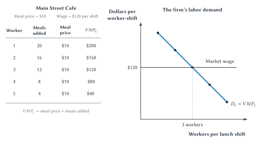
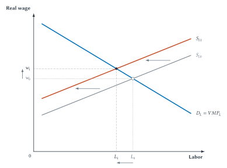
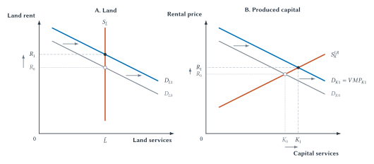

Chapter 18
Factor Markets, Labor, and Income Distribution
Demand for labor, land, and capital begins with the value those inputs help create.

Why does a restaurant hire another cook? Why does an apartment in Manhattan generate more land rent than a similar-sized plot in a small town? Why do firms rent access to powerful computer chips? Why do workers doing different jobs earn different wages?
These may look like separate questions. They share one economic idea: productive resources are valuable because they help create goods and services that people value.
Markets for those resources are called factor markets. The main factors of production are labor, land, and capital. Their prices become wages, land rents, and returns to capital. Those payments are also important sources of household income.
This chapter therefore links two sides of the economy. Households supply labor and own resources. Firms demand those resources because consumers want the products they help produce. The demand for a restaurant worker begins with diners who want meals. The demand for a delivery driver begins with customers who want packages delivered. The demand for a graphics-processing unit begins with the value of the computing work it can perform.
That link gives us a starting point, not a complete explanation of every paycheck. Productivity matters. So do scarcity, worker choices, working conditions, information, employer power, bargaining rules, discrimination, and public policy. Our task is to separate those possible causes rather than assume that one observation explains itself.
Factor Demand Comes From Product Demand
A firm does not demand labor, land, or machines for their own sake. It demands them because they help produce something customers are willing to buy. Economists call this derived demand: demand for an input is derived from demand for the output the input helps produce.
Suppose a restaurant becomes famous and customers begin lining up for lunch. The restaurant may demand more cooks, servers, food, tables, and kitchen equipment. If customers lose interest, demand for many of those inputs falls. Nothing about the workers or ovens needs to change. A worker can become more valuable without becoming more productive when customers value the worker’s output more. The same worker can become less valuable without working any worse when demand for that output falls.
Productivity can change factor demand too. A new oven that lets each cook prepare more meals can increase the restaurant’s demand for cooks. A machine that performs a task previously done by workers can reduce demand for those workers.
Three parts therefore matter:
- How much additional output does another unit of the input produce?
- What is that additional output worth?
- What does the additional input cost?
We will begin with labor because it is the factor market students encounter most directly.
Labor Demand And The Value Of Marginal Product
Chapter 13 introduced marginal product: the additional output produced by adding one more unit of an input while other inputs are fixed. At a restaurant, the marginal product of labor is the additional meals produced by another worker during a shift.
Marginal product is measured in units of output. A firm must convert that output into dollars before comparing it with a wage. Under the competitive benchmark, that conversion is simple:
\[ VMP_L = P \times MP_L \]
The value of the marginal product of labor, written \(VMP_L\), equals the product price, \(P\), multiplied by the marginal product of labor, \(MP_L\).
In plain English: find how much extra output another worker produces, then multiply by the price of that output.
Main Street Cafe
Main Street Cafe sells lunches for $10 each. Its kitchen and dining area are fixed during the lunch shift. As more workers share that space and equipment, the extra meals added by each new worker eventually decline.
The first worker adds 20 meals, worth $200. The second adds 16 meals, worth $160. The third adds 12 meals, worth $120. The fourth adds 8 meals, worth $80. The fifth adds 4 meals, worth $40.
Suppose the market wage is $120 per lunch shift. The first three workers each add at least $120 of value. The fourth adds only $80. The cafe therefore hires three workers.
Figure 18.1. Product demand creates labor demand. Diners’ demand gives meals a market value. The production process determines the additional meals produced by another worker. Multiplying the two gives the value of that worker’s marginal product. At a market wage of $120, Main Street Cafe hires three workers: the third worker covers the wage, while the fourth does not.
The hiring rule follows the marginal reasoning used throughout this book:
- If another worker adds more value than the worker costs, hiring that worker increases the firm’s economic profit.
- If another worker adds less value than the worker costs, hiring that worker decreases economic profit.
- The profit-maximizing benchmark occurs where the value of the last worker’s marginal product equals the wage.
In symbols, the benchmark is \(VMP_L = w\), where \(w\) is the wage. The rule is the same as marginal benefit equals marginal cost. The added value is the firm’s marginal benefit from hiring. The wage is the marginal cost.
Key Point
A Competitive Firm Hires While The Added Value Covers The Wage
The firm hires another worker when that worker’s value of marginal product exceeds the wage. It stops when the next worker would cost more than the value the worker adds.
The declining \(VMP_L\) schedule is the firm’s labor-demand curve. At a lower wage, more workers pass the hiring test. At a higher wage, fewer do. This is the same demand logic learned in Chapter 3: as the price of an input changes, the quantity of that input demanded changes.
Several things can shift labor demand. Stronger demand for the firm’s product, a higher product price, or equipment that makes workers more productive can shift labor demand right. Weaker product demand or technology that replaces the workers’ tasks can shift it left.
The simple equation assumes the firm can sell additional output at a given market price. A firm with market power must consider how selling more affects its revenue on other units, just as Chapter 15 explained. The broader term is marginal revenue product. For this principles-level chapter, \(VMP_L\) gives us the main idea without adding another required curve.
One Logic, Three Factor Markets
Labor, land, and physical capital are different resources, but firms demand all three for the same basic reason: they help produce valuable output.
| Factor | What The Firm Uses | Payment | What Matters On The Supply Side |
|---|---|---|---|
| Labor | Worker time and effort | Wage | Work choices, skills, mobility, alternatives, and time |
| Land | A location or natural resource | Land rent | The total amount is essentially fixed, and useful locations may be especially scarce |
| Physical capital | Services from equipment, structures, software, or computing capacity | Rental price or return | Existing equipment is fixed in the short run, but produced capital can expand over time |
Table 18.1. The same demand logic meets different supply conditions. Product demand creates demand for all three factors. Their payments differ partly because the available quantity and speed of adjustment differ.
Physical capital means produced resources used to make other goods and services: buildings, machines, tools, software, vehicles, and computing equipment. It is not money. A stock or bond is a financial asset, while the factory, server, or software financed by those claims may be physical capital.
Human capital means productive knowledge, skills, experience, and health embodied in people. Human capital can raise the marginal product of labor, but it cannot be separated from the person and rented like a machine.
Labor Supply And The Market Wage
Firms demand labor. People supply it.
Working has an opportunity cost. An hour at work cannot also be used for sleep, family, school, recreation, or another job. A higher wage raises the cost of giving up paid work, which can encourage people to enter the labor force, work more hours, move to a new area, learn a new occupation, or acquire additional skills.
But a higher wage also raises income. Some people may use that higher income to purchase more free time and work fewer hours. The effect on one person’s hours can therefore go either way.
For a whole labor market, an upward-sloping labor-supply curve remains a useful first approximation. Higher wages usually attract more people, effort, hours, training, or migration into an occupation. The response may be small in the short run and larger over time.
A rising wage therefore does two jobs: it tells employers that labor has become more costly, and it gives workers a reason to enter, move, train, or work more.
The competitive market wage occurs where the amount of labor firms want to hire equals the amount workers want to supply. At a wage above that level, more people seek work than firms want to hire. At a wage below it, employers want more labor than workers offer. Competition among workers and employers pushes toward the market-clearing wage.
This benchmark assumes that workers have meaningful alternatives and employers compete for their services. Later in the chapter, we will relax that assumption.
The Black Death And The Price Of Scarce Labor
The Black Death was a devastating plague pandemic that struck Europe with extraordinary force in the late 1340s and early 1350s. Mortality estimates vary by place and source, but the loss of life was enormous. In England, historical estimates often place mortality from the first outbreak around 30 to 45 percent.1
The human suffering cannot be reduced to a graph. But the economic consequences show the power of factor scarcity with unusual clarity.
The plague sharply reduced the supply of labor. Land, buildings, tools, and livestock did not disappear in the same proportion. Surviving workers therefore had more land and capital available per worker. Their labor became scarcer, and the marginal product of remaining workers rose.

Figure 18.2. A sharp loss of workers raises the price of scarce labor. The leftward shift of labor supply reduces employment from \(L_0\) to \(L_1\) and raises the real wage from \(w_0\) to \(w_1\). The movement up the labor-demand curve reflects a higher value of marginal product for the last worker hired when land and much physical capital remain available to fewer workers.
Real wages did not rise in exactly the same way, at the same time, or for every kind of worker across Europe. Product demand, employment arrangements, mobility, and local institutions mattered. The graph is a first-pass model, not the entire history.2
The response of English authorities is revealing. The Ordinance of Labourers of 1349 and the Statute of Labourers of 1351 attempted to hold wages near earlier levels, compel able-bodied people to work, and limit worker mobility.3 The laws show that landowners and officials understood the pressure for higher wages even without drawing supply and demand curves.
They also reconnect this chapter to Chapter 8. Lawmakers could announce a maximum wage, but they could not repeal the scarcity of labor. Attempts to suppress the money wage created pressure for evasion, changes in job terms, and conflict over enforcement.
Historical Note
The Black Death As A Factor-Market Shock
The plague made workers scarcer relative to land and capital. The resulting pressure for higher wages was not a reward for moral worth or effort. It was a change in scarcity, productivity, and bargaining alternatives.
Land And Physical Capital
The same derived-demand logic applies to land and capital, but their supply conditions differ.
Land: Demand Mostly Changes Rent
The total amount of land is essentially fixed. A city cannot create more land near its downtown business district, lakefront, or major university. When demand for a location rises, the main effect is a higher land rent rather than much more land.
That does not mean every parcel has a fixed use. A parking lot can become an apartment building. A farm can become a subdivision. Better roads can make a distant location more useful. But the aggregate physical quantity of land does not respond the way production of machines can.
Land rent therefore reflects what users are willing to pay for a scarce location or natural resource. A Manhattan restaurant may pay far more for its site than an otherwise similar restaurant in a small town, even if the buildings are identical. The location helps produce access to customers.
Capital: Supply Can Grow Over Time
Physical capital is produced. A firm can build another warehouse, purchase another truck, install another oven, write more software, or rent more computing capacity. The existing stock may be nearly fixed this month, but it can expand over several years.
Firms demand capital services: the productive use of capital for a period of time. The value of the marginal product of capital follows the same logic as labor:
\[ VMP_K = P \times MP_K \]
A firm uses another unit of capital service when the value it adds exceeds its rental price. The benchmark occurs where \(VMP_K\) equals the rental price, \(R_K\).
The rental price can be visible. A company may rent cloud computing or pay by the hour for access to a powerful GPU. It can also be implicit. A restaurant that owns its oven still gives up the opportunity to sell it, rent it, or use the money invested in it elsewhere. Ownership does not make capital free.

Figure 18.3. Stronger factor demand has different effects when supply conditions differ. In panel (a), the quantity of land is essentially fixed, so stronger demand mainly raises land rent. In panel (b), produced capital can expand in the long run, so stronger demand raises both the rental price and the quantity of capital services.
Capital can change labor demand in either direction. A better oven may help a cook produce more meals, raising the cook’s marginal product. The oven and cook are complements. A self-checkout machine may perform tasks once done by a cashier. The machine and that task are substitutes.
The right question is not simply whether a firm uses more technology. Ask which tasks the capital performs, which workers it helps, which workers it replaces, and whether lower costs expand the firm’s output.
Why Earnings Differ
Workers do not all earn the same wage because they do not perform the same work under the same conditions. Three ideas do most of the work.
First, education, training, experience, and health can build human capital and raise productivity. Building human capital is an investment: it requires time, effort, tuition, and forgone earnings now for an uncertain future return. As Chapter 12 explained, education can also provide a signal and can be valuable consumption, so a college earnings premium does not measure learning alone.
Second, jobs have nonmoney features. A compensating differential is a wage difference that compensates workers for risk, unpleasant conditions, inflexible hours, or other job features. A worker may accept less cash for remote work or a predictable schedule and require more for danger or night work.
Third, scarcity and alternatives matter. A skill commands a high wage when demand is strong and few workers can supply it. Earnings also depend on how easily workers can change employers and how easily employers can replace them.
Technology, Tasks, And Artificial Intelligence
Predictions about AI often jump from “AI can do this task” to “this job will disappear.” But a job is a bundle of tasks. Technology may replace some tasks, help workers perform others, lower costs enough to expand output, and create new work.4
That produces no single prediction for labor demand. Substitution can reduce it. Complementarity can raise a worker’s marginal product. Lower prices can increase sales and demand for workers still needed in production.
In one study of 5,172 customer-support agents, a generative-AI assistant increased issues resolved per hour by about 15 percent on average. Less experienced workers gained the most.5 That is useful evidence about one kind of work, not a forecast for the entire economy.
Key Point
Do Not Ask Whether AI Replaces “Jobs” In The Abstract
Ask which task changes, whether AI substitutes for or complements the worker, whether lower cost expands output, what new work appears, and how quickly workers can adjust.
Productivity gains and worker disruption can occur together. The effects can differ across workers and between the short run and long run.
Even when AI makes workers more productive, higher wages do not follow automatically. The gains may reach workers through wages, consumers through lower prices, or owners through higher profits.
Employer Market Power And Labor-Market Institutions
The competitive model assumes employers compete for workers. When changing jobs is costly or realistic alternatives are limited, an employer can have monopsony power. A rural hospital, for example, may have power over specialized workers even though it is not the town’s only employer.
The important question is not how many employers exist on a map. It is how many realistic alternatives a particular worker has.
Employer power can allow a firm to pay less and hire fewer workers than under competition. It also changes one conclusion from Chapter 8: a moderate minimum wage can sometimes raise both wages and employment when an employer has been holding both below the competitive level. A sufficiently high minimum wage still reduces employment.
Unions are another response to unequal bargaining power. By negotiating collectively, workers may obtain higher wages or better conditions. Firms may respond through hiring, prices, work rules, or investment. The main lesson is simple: value of marginal product remains the benchmark, but worker alternatives and labor-market institutions affect actual wages.
Discrimination: Begin With The Evidence
Labor-market discrimination occurs when otherwise similar people receive different treatment because of a group characteristic rather than a productivity-related difference.
That definition is easier to state than to measure. A study must identify the decision being studied, the groups being compared, and the productivity-related differences that might matter. The direction of unequal treatment should be established by evidence rather than assumed in advance.
A Raw Gap Is A Description
In 2025, women working full time in U.S. wage and salary jobs had median weekly earnings equal to 82.1 percent of the median for men.6 That describes two broad groups. It does not mean a woman earned 17.9 percent less than an otherwise identical man doing the same work. Occupation, hours, experience, job structure, and discrimination are among the possible causes a serious analysis must separate.7
An adjusted gap compares people with similar measured characteristics, but the remaining difference is not automatically discrimination. A more focused design can hold selected traits constant. One large correspondence experiment sent more than 83,000 fictitious applications to 108 large employers. Applications with distinctively Black names received employer contact 2.1 percentage points less often on average. The average male-female difference was not statistically significant, although individual employers differed in both directions.8 The experiment gives strong evidence about initial contact at those employers, not every later employment decision.
Becker: Prejudice Can Be Costly To The Employer
Gary Becker gave discrimination a sharp economic interpretation. A prejudiced employer rejects an equally productive worker and may hire a more expensive alternative. The prejudice acts like a self-imposed tax. A less prejudiced competitor can hire the overlooked worker, produce at lower cost, and gain market share.9
Competition therefore pushes against employer prejudice, but it may not eliminate discrimination. Customer preferences, limited worker alternatives, entry barriers, or the use of group averages when individual information is costly can weaken that pressure.10
Evidence Can Point In Different Directions
In five Cornell-led experiments, 873 tenure-track faculty evaluated materials for hypothetical assistant professor candidates in biology, engineering, economics, and psychology. One validation experiment used full CVs. When scholarship and other characteristics were held constant, faculty preferred female candidates by roughly two to one overall. Male economists were the exception; they showed no gender preference.11
This does not prove that women receive an advantage in every STEM job. It is evidence about faculty evaluations of strong hypothetical candidates in particular fields. Paired with the correspondence audit, it teaches a broader lesson: careful research may find unequal treatment in different directions in different settings. The result must come from the evidence, not from an assumed story.
Historical Note
Gary Becker And The Reach Of Economics
Gary Becker used economic reasoning to study subjects once treated as outside economics, including human capital and discrimination. His models did not claim that productivity explains every earnings difference or that competition instantly removes prejudice. They showed how investment, incentives, information, and competition create testable explanations for human behavior.12
From Factor Payments To Household Distribution
Wages, rents, and returns to capital help determine household resources. Before discussing inequality or poverty, we must distinguish what is being measured.
Earnings come from work. Household income can also include returns to assets and government transfers. Wealth is assets minus debts. Poverty measures whether resources fall below a stated threshold. A person can rank differently under each measure, so they should not be used as if they were interchangeable.
Transfers, Insurance, And Incentives
Government transfers can raise the resources of low-income households and provide insurance against hardship. They also require taxes and eligibility rules that may change incentives to work or save. Evaluating a program therefore requires asking who gains, who pays, and how behavior changes. Distribution and efficiency are different questions, but policy can affect both.
The Big Picture
Product markets and factor markets are connected. Consumers’ willingness to pay gives output value. That value creates firms’ demand for the labor, land, and capital used to produce it.
For labor, the value of marginal product turns physical productivity into a dollar measure. A competitive firm hires while the value added by another worker covers the wage. Labor demand can change when product demand, output price, worker productivity, or technology changes.
Labor supply reflects the opportunity cost of time and the many ways people can adjust: participation, hours, training, occupation, and location. The Black Death shows how a sharp reduction in labor supply can raise the wage of remaining workers when land and capital remain available to fewer people.
Land and produced capital follow the same demand logic but different supply logic. Stronger demand for a fixed amount of land mainly raises rent. Produced capital can expand over time. Owned capital still has an opportunity cost.
Actual wages are not explained by one equation. Human capital, experience, job conditions, scarcity, worker alternatives, employer power, unions, and public rules all matter. Technology can replace tasks, help workers, expand output, and create new work. The effect depends on the task, market, worker, and time horizon.
Earnings gaps and representation differences are descriptions that call for explanation. They do not choose an explanation. Raw comparisons, statistical adjustments, audits, and rules answer different questions. Becker’s model shows why employer prejudice can sacrifice profit, while information problems, market power, customer preferences, and institutions help explain why unequal treatment can persist.
Economics cannot decide by itself which distribution is fair. It can make the trade-offs clearer, distinguish earnings from income and wealth, and show how policies alter resources and incentives. That is a substantial contribution precisely because the questions are difficult.
Study And Learn
Chapter Study Map
Core Ideas
- Demand for an input is derived from demand for the output it helps produce.
- The value of the marginal product of labor is \(VMP_L = P \times MP_L\).
- A competitive firm hires another worker while that worker’s added value covers the wage.
- The firm’s declining \(VMP_L\) schedule is its labor-demand curve.
- Labor supply reflects the opportunity cost of time and several adjustment choices.
- A sharp reduction in labor supply can raise the real wage when workers become scarcer relative to land and capital.
- Land is essentially fixed in aggregate, while produced capital can expand over time.
- Human capital, experience, job conditions, scarcity, and institutions can all affect earnings.
- A job is a bundle of tasks; technology can substitute for some tasks and complement others.
- Monopsony is employer market power caused by limited worker alternatives.
- A raw earnings or representation gap does not identify its cause.
- Taste-based discrimination costs the employer profit in Becker’s competitive benchmark.
- Earnings, household income, wealth, and poverty are different measures.
Figures And Tables
- Figure 18.1: calculate value of marginal product and explain why Main Street Cafe hires three workers at a $120 wage.
- Table 18.1: compare labor, land, and capital markets.
- Figure 18.2: trace the Black Death labor-supply shock to lower employment and a higher real wage.
- Figure 18.3: compare stronger demand for fixed land with stronger demand for produced capital.
Common Mistakes
- Treating demand for labor as independent of demand for the firm’s product.
- Confusing marginal product, measured in output, with value of marginal product, measured in dollars.
- Assuming a higher wage causes every individual to work more hours.
- Treating capital as money rather than a produced input.
- Forgetting the opportunity cost of capital the firm owns.
- Assuming technology either destroys jobs or creates jobs through only one channel.
- Defining monopsony as requiring exactly one employer.
- Treating a raw gap or a regression residual as proof of discrimination.
- Assuming representation reveals why people reached an outcome.
- Using earnings, income, and wealth as if they were the same.
Looking Ahead
Chapter 19 applies information problems, incentives, insurance, and public policy to health and health care. Labor markets will reappear in the supply of physicians, nurses, and other health professionals.
Review Questions
- What is a factor market?
- What does it mean to say factor demand is derived demand?
- What is the value of the marginal product of labor?
- Why does a competitive firm hire another worker when \(VMP_L\) exceeds the wage?
- Why is a firm’s declining \(VMP_L\) schedule its labor-demand curve?
- Name three events that can shift labor demand.
- Why can a higher wage have more than one effect on an individual’s labor supply?
- How did the Black Death change the scarcity of labor relative to land and capital?
- Why did English wage restrictions after the plague face market pressure?
- Why does stronger demand mainly raise land rent rather than the quantity of land?
- What is physical capital, and how does it differ from a financial asset?
- Why does a firm-owned machine have an implicit rental cost?
- What is human capital?
- What is a compensating differential?
- Why is a job better understood as a bundle of tasks when studying AI?
- Distinguish substitution, complementarity, output expansion, and new-task effects.
- What is monopsony power?
- Why can monopsony exist with more than one employer?
- How can employer power change the effect of a moderate minimum wage?
- Why is a raw earnings gap descriptive rather than causal?
- What can a correspondence audit establish?
- Why does Becker’s taste-based discrimination model predict a profit cost to the employer?
- Why might discrimination persist despite competitive pressure?
- Why does representation in an occupation not identify discrimination by itself?
- Distinguish earnings, household income, wealth, and poverty.
Economic Reasoning Questions
- A bakery worker adds 15 loaves per hour, and each loaf sells for $4. What is the worker’s value of marginal product? Should the bakery hire the worker at a wage of $50 per hour? Explain.
- At Main Street Cafe, suppose the meal price rises from $10 to $12 while marginal meals do not change. Calculate the third and fourth workers’ values of marginal product. How many workers pass the hiring test at a $120 wage?
- A new ordering system lets each restaurant server handle more tables. Trace the effect on marginal product, value of marginal product, and labor demand.
- Demand for print newspapers falls. Explain how this can reduce demand for printing-press operators even if their physical productivity does not change.
- A city becomes a major technology center. Compare the likely effects on downtown land rent and the long-run quantity of office equipment.
- A firm owns a delivery truck outright. Explain why using the truck is not free.
- Give one example of capital that complements labor and one example of capital that substitutes for a labor task.
- A dangerous job pays more than a safer job requiring similar skill. State the compensating-differential explanation and one alternative explanation that should be checked.
- An AI tool lets junior accountants complete routine reviews faster but automates some data-entry tasks. Identify the complementarity and substitution channels.
- A rural hospital is the only nearby employer of a specialized type of technician. Explain why it may have monopsony power even though many other employers operate in the county.
- Why might a moderate minimum wage raise employment in one labor market but reduce it in another?
- Women have higher representation than men in an occupation. List four pieces of information needed before drawing a conclusion about discrimination.
- A regression controls for occupation and finds a smaller gender earnings gap. Explain what the result adds and what it does not prove.
- An audit study finds unequal employer contact after otherwise similar resumes are sent. Why is that stronger than a raw representation gap? Why is it still not a complete study of careers or pay?
- A transfer program raises a household’s resources but reduces benefits by $1 for every additional $2 earned. Identify the intended gain and the possible work incentive.
Optional Research And Discussion Questions
- Choose one occupation affected by generative AI. Break the job into at least five tasks, then classify each task as likely substitution, complementarity, little change, or new work. Explain what evidence would test your predictions.
- Find a recent earnings-gap claim in the news. Identify the population, measure, and period. Is the statistic raw, adjusted, or causal? Rewrite the headline so that it says only what the evidence supports.
- Compare the number of employers in a local labor market with the number of realistic alternatives available to one specific kind of worker. Which measure better captures employer power?
- Investigate a job with a large compensating differential. What nonmoney job features, worker skills, and risks would need to be held constant before estimating the wage difference?
- Choose a safety-net program. Identify its goal, eligibility rule, benefit reduction rule, financing source, and two ways households might adjust.
Source Notes
Jane Humphries and Jacob Weisdorf, “The Wages of Women in England, 1260-1850”, Journal of Economic History 75, no. 2 (2015): 405-447. Mortality estimates differ across places and sources; the chapter uses the range only to establish the scale of the English labor-supply shock.↩︎
Sevket Pamuk, “The Black Death and the Origins of the ‘Great Divergence’ across Europe, 1300-1600”, European Review of Economic History 11, no. 3 (2007): 289-317. Wage paths and institutional responses differed across European regions.↩︎
The National Archives, “Plague”; Mark Bailey, “The Regulation of the Rural Market in Waged Labour in Fourteenth-Century England”, Continuity and Change 38, no. 2 (2023): 167-193. The laws attempted wage restraint and labor control, but their enforcement and effects were more complicated than a simple declaration of failure.↩︎
Daron Acemoglu and Pascual Restrepo, “Automation and New Tasks: How Technology Displaces and Reinstates Labor”, Journal of Economic Perspectives 33, no. 2 (2019): 3-30.↩︎
Erik Brynjolfsson, Danielle Li, and Lindsey R. Raymond, “Generative AI at Work”, Quarterly Journal of Economics 140, no. 2 (2025): 889-942. The study concerns one generative-AI assistant, one firm, and customer-support work. It should not be read as an economy-wide employment estimate.↩︎
U.S. Bureau of Labor Statistics, “Usual Weekly Earnings of Wage and Salary Workers – 2025”, January 28, 2026. The figures are annual medians for full-time wage and salary workers and are 11-month averages because October 2025 data were not collected during the federal government shutdown.↩︎
Francine D. Blau and Lawrence M. Kahn, “The Gender Wage Gap: Extent, Trends, and Explanations”, Journal of Economic Literature 55, no. 3 (2017): 789-865. The review discusses multiple contributors and the limits of assigning causal shares from broad comparisons.↩︎
Patrick Kline, Evan K. Rose, and Christopher R. Walters, “Systemic Discrimination Among Large U.S. Employers”, Quarterly Journal of Economics 137, no. 4 (2022): 1963-2036. The experiment measured employer contact after fictitious applications, not every stage of employment.↩︎
Gary S. Becker, The Economics of Discrimination (University of Chicago Press, 1957); Kerwin Kofi Charles and Jonathan Guryan, “Prejudice and Wages: An Empirical Assessment of Becker’s The Economics of Discrimination”, Journal of Political Economy 116, no. 5 (2008): 773-809. Becker’s competitive-pressure result is a benchmark mechanism rather than a claim that all discrimination disappears.↩︎
Edmund S. Phelps, “The Statistical Theory of Racism and Sexism”, American Economic Review 62, no. 4 (1972): 659-661; Kenneth J. Arrow, “What Has Economics to Say About Racial Discrimination?”, Journal of Economic Perspectives 12, no. 2 (1998): 91-100. Group information may be used as a proxy when individual information is costly; that does not make the treatment accurate for every individual or socially desirable.↩︎
Wendy M. Williams and Stephen J. Ceci, “National Hiring Experiments Reveal 2:1 Faculty Preference for Women on STEM Tenure Track”, Proceedings of the National Academy of Sciences 112, no. 17 (2015): 5360-5365. The five experiments studied evaluations of hypothetical assistant-professor candidates, not completed hiring decisions or every STEM labor market.↩︎
Nobel Prize, “The Sveriges Riksbank Prize in Economic Sciences in Memory of Alfred Nobel 1992”; Gary S. Becker, Human Capital (1964) and The Economics of Discrimination (1957).↩︎